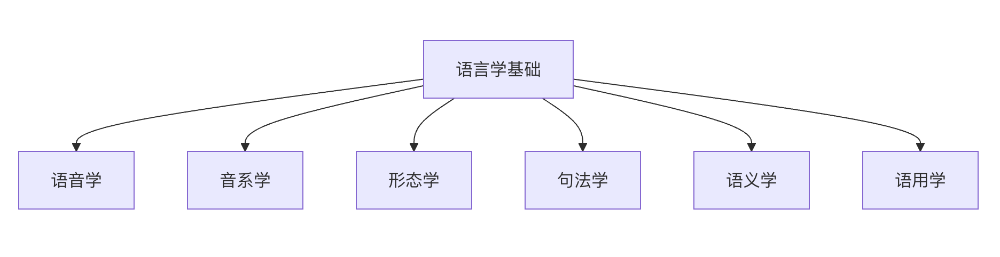

Linguistics Basics
As an important branch of artificial intelligence, Natural Language Processing (NLP) aims to enable computers to understand, interpret, and generate human language. To master NLP, one must first understand the basic principles that underpin human language - this is the foundation of linguistics.
Linguistics provides the theoretical framework and analytical tools for NLP, mainly including the following key aspects:
- Phonetics: studies the sound system of language
- Phonology: studies how sounds combine to form meaningful linguistic units
- Morphology: studies the internal structure of words
- Syntax: studies sentence structure
- Semantics: studies the meaning of language
- Pragmatics: studies the use of language in context

Phonetics & Phonology
Phonetics
Phonetics studies the physical properties and production mechanisms of speech sounds, focusing on the acoustic and physiological characteristics of speech.
Articulatory Organs and Manners of Articulation
- Articulatory organs：
- Lungs: provide airflow
- Larynx: vocal cord vibration produces voiced sounds
- Oral cavity: tongue, teeth, and lips modulate airflow
- Nasal cavity: produces nasal sounds
Consonant Classification
Classified by manner of articulation and place of articulation:
-
Manner of Articulation：
- Plosives: /p/, /b/, /t/, /d/, /k/, /g/
- Fricatives: /f/, /v/, /s/, /z/
- Affricates: /ts/, /tʃ/
- Nasals: /m/, /n/, /ŋ/
- Lateral: /l/
- Trill: /r/
-
Place of Articulation：
- Bilabial: /p/, /b/, /m/
- Labiodental: /f/, /v/
- Alveolar: /t/, /d/, /n/
- Velar: /k/, /g/, /ŋ/
Vowel Classification
Classified by tongue position and lip shape:
- Tongue Height: high vowels /i/, /u/, mid vowels /e/, /o/, low vowel /a/
- Tongue Frontness/Backness: front vowels /i/, /e/, central vowel /a/, back vowels /u/, /o/
- Lip Shape: rounded vowels /u/, /o/, unrounded vowels /i/, /e/, /a/
Characteristics of Chinese Phonetics
- Tonal language: tones serve to distinguish meaning
- The four basic tones of Mandarin: 阴平 (level), 阳平 (rising), 上声 (falling-rising), 去声 (falling)
- Example: 妈(mā) 麻(má) 马(mǎ) 骂(mà)
- Syllable Structure: structure of initial (声母) + final (韵母)
- Initials: 21 basic initials
- Finals: 39 basic finals
Phonology
Phonology studies the structure and rules of sound systems, focusing on the function of sounds in a specific language.
Phoneme
- The smallest phonological unit that has the function of distinguishing meaning
- Example: In English, /p/ and /b/ are different phonemes (pit vs bit)
- In Chinese, tones are an integral part of phonemes
Allophone
- Phonetic realizations of the same phoneme in different environments
- Example: In English, /p/ has different degrees of aspiration in different positions
Phonological Rules
- Describe the patterns of sound changes in specific environments
- Example: The tone sandhi rules for the Chinese character "一"
- English plural phonetic changes: cats /s/, dogs /z/, horses /ɪz/
Applications in NLP
- Speech recognition: converting sound signals to text
- Speech synthesis: converting text to speech
- Phoneme-to-character conversion: conversion from pinyin to Chinese characters
- Prosody analysis: computational analysis of poetic prosody
Morphology
Morphology studies the internal structure of words and the rules of word formation, and is the foundation of lexical-level analysis.
Basic Concepts
Morpheme
- The smallest meaningful grammatical unit in language
- Free morpheme: a morpheme that can be used independently, such as "书" (book), "run"
- Bound morpheme: must attach to other morphemes, such as prefixes and suffixes
Root, Affix, and Stem
- Root: the carrier of the core meaning of a word
- Example: In "unhappiness", "happy" is the root
- Affix：
- Prefix: un-, re-, pre-
- Suffix: -ness, -tion, -ly
- Infix: relatively rare, e.g., in Tagalog
- Stem: the form after removing inflectional affixes
Word Formation
Derivation
- Changes the part of speech or word meaning by adding derivational affixes
- Examples:
- happy → unhappy (adding a negative prefix)
- happy → happiness (nominalizing suffix)
- teach → teacher (agentive suffix)
Compounding
- Combining two or more roots to form a new word
- English examples:
- blackboard（black + board）
- laptop（lap + top）
- Chinese examples:
- 电脑 (electric + brain = computer)
- 手机 (hand + machine = mobile phone)
Inflection
- Changes the grammatical form of a word without changing its basic meaning
- English verb conjugation: walk, walks, walked, walking
- Noun plurals: book → books, child → children
- Chinese has relatively little inflectional morphology
Characteristics of Chinese Morphology
The concept of the word
- Word boundaries in Chinese are relatively fuzzy
- The boundaries between characters, words, and phrases are less clear than in English
- Example: "研究生" can be one word, or it can be analyzed as "研究" + "生"
Word formation methods
-
Compounding is the dominant method：
- Modifier-head: 火车 (fire + vehicle)
- Verb-object: 司机 (operate + machine)
- Subject-predicate: 地震 (earth + quake)
- Coordinate: 朋友 (friend + friend)
-
Reduplication in word formation：
- Verb reduplication: 看看 (look-look), 走走 (walk-walk)
- Adjective reduplication: 红红的 (red-red), 慢慢地 (slowly-slowly)
- Noun reduplication: 人人 (person-person), 事事 (matter-matter)
Flexible use of word classes
- The same character or word can function as different parts of speech
- Example: "水" can be a noun (喝水 drink water) or a verb (水稻田 water the paddy field)
Applications in NLP
Stemming
- Reducing words to their stem form
- Porter algorithm: reduces "running", "runs", and "ran" all to "run"
Lemmatization
- Reducing words to their dictionary form (lemma)
- Considers part-of-speech information, making it more accurate
Chinese word segmentation
- Since Chinese words are not separated by spaces, word segmentation is required
- Methods based on dictionaries, statistics, or neural networks
Part-of-speech tagging
- Determining the grammatical category of each word
- Provides foundational information for syntactic analysis
Syntax
Syntax studies the structure and organizational regularities of sentences, and is the core of understanding language grammar.
Basic Concepts
Phrase structure
- Noun Phrase (NP): a phrase centered on a noun
- Example: 那本有趣的书 (that interesting book)
- Verb Phrase (VP): a phrase centered on a verb
- Example: 快速地跑步 (run quickly)
- Prepositional Phrase (PP): a phrase centered on a preposition
- Example: 在桌子上 (on the table)
- Adjective Phrase (AP): a phrase centered on an adjective
- Example: 非常美丽 (very beautiful)
Sentence constituents
- Subject: the performer of the action
- Predicate: describes the action or state of the subject
- Object: the receiver of the action
- Attributive: a constituent that modifies a noun
- Adverbial: a constituent that modifies a verb or adjective
- Complement: a constituent that provides supplementary description
Syntactic Analysis Methods
Phrase Structure Grammar
- Uses rewrite rules to describe sentence structure
- Example:
S → NP VP NP → Det N VP → V NP Det → the, a, an N → cat, dog, book V → chase, read
Dependency Grammar
- Centered on dependency relations between words
- Each word depends on a head word (except the root node)
- Example: in "小猫追老鼠" (the kitten chases the mouse):
- "追" (chases) is the root node
- "小猫" (kitten) depends on "追" (subject-predicate relation)
- "老鼠" (mouse) depends on "追" (verb-object relation)
- "小" (little) depends on "猫" (cat) (modifier-head relation)
Tree representation
追
/ \
小猫 老鼠
/
小
Chinese Syntax Characteristics
Word order characteristics
- Basic word order: Subject-Verb-Object (SVO)
- Modifiers precede what they modify: 的-structures
- Example: 那个穿红衣服的美丽女孩 (that beautiful girl in red clothes)
Special structures
- 把-construction: 把 + object + verb
- Example: 我把书放在桌子上 (I put the book on the table)
- 被-construction: subject + 被 + agent + verb
- Example: 书被我放在桌子上 (The book was put on the table by me)
- Existential sentences: express existence or appearance
- Example: 桌子上放着一本书 (There is a book on the table)
Degree of grammaticalization
- The degree of grammaticalization in Chinese is relatively low
- Word order and context play an important role in expressing grammatical relations
- Lacks rich morphological inflection
Challenges in Syntactic Analysis
Ambiguity problems
- Structural ambiguity: a sentence can have multiple syntactic analyses
- Example: "我看见了拿着望远镜的人" (I saw the person holding binoculars)
- Analysis 1: I saw the person using binoculars
- Analysis 2: I saw a person who was holding binoculars
Long-distance dependencies
- Dependency relations between sentence constituents may span great distances
- Example: in the question "什么书你昨天买了？" (What book did you buy yesterday?), there is a dependency relation between "什么" (what) and "买" (buy)
Ellipsis phenomena
- Chinese frequently omits subjects or other constituents
- Example: (我) 昨天看了电影，(电影) 很好看 — (I) watched a movie yesterday, and (the movie) was very good
Applications in NLP
Syntactic parsers
- Rule-based: uses hand-written grammar rules
- Statistical methods: probabilistic models based on annotated corpora
- Deep learning: uses neural networks for end-to-end learning
Syntactic treebanks
- Penn Treebank (English)
- Chinese Treebank (CTB)
- Provides training and evaluation data for syntactic parsing
Application tasks
- Machine translation: understanding the syntactic structure of the source language
- Information extraction: extracting information based on syntactic patterns
- Question answering systems: understanding the syntactic structure of questions
Semantics
Semantics studies the meaning of language, and is the core of natural language understanding.
Basic Concepts
Lexical semantics
- Word meaning: the concept or meaning expressed by a word
- Polysemy: a word has multiple related meanings
- Synonymy: different words express the same or similar meanings
- Antonymy: oppositional relations between words
- Hyponymy: inclusion relations between concepts
Semantic relations
- Synonyms：
- Perfect synonyms: relatively rare
- Near-synonyms: 快乐-高兴 (happy), 大-巨大 (big-huge)
- Antonyms：
- Complementary antonyms: 死-活 (dead-alive), 男-女 (male-female)
- Gradable antonyms: 冷-热 (cold-hot), 大-小 (big-small)
- Relational antonyms: 老师-学生 (teacher-student), 买-卖 (buy-sell)
- Hypernyms and hyponyms：
- Hypernyms: 动物 (animal), 颜色 (color)
- Hyponyms: 狗 (dog), 猫 (cat) (hyponyms of animal)
Sentence Semantics
Proposition
- The basic semantic content expressed by a sentence
- Example: the proposition expressed by the sentence "小明在图书馆看书" (Xiaoming is reading a book in the library):
- Agent: 小明 (Xiaoming)
- Action: 看 (read)
- Patient: 书 (book)
- Location: 图书馆 (library)
Semantic roles
- Agent: the performer of the action
- Patient: the receiver of the action
- Instrument: the tool used to accomplish the action
- Location: the place where the action occurs
- Time: the time when the action occurs
- Manner: the manner of the action
Argument structure
- The semantic participants required by a verb
- Example: the verb "给" (give) requires three arguments:
- Giver (Agent)
- Receiver (Recipient)
- Thing given (Patient)
Semantic Representation
Logical representation
- Uses logical formulas to represent meaning
- First-order logic: ∃x (person(x) ∧ happy(x))
- Example: the logical representation of the sentence "有人很高兴" (Someone is very happy)
Frame Semantics
- Understanding semantics based on cognitive frames
- FrameNet project: building frame-based semantic resources
- Example: The commercial transaction frame includes elements such as buyer, seller, goods, and price
Concept graphs
- Use graph structures to represent concepts and relationships
- Nodes represent concepts, edges represent relationships
- Suitable for representing complex semantic networks
Semantic Ambiguity
Lexical ambiguity
- Polysemy: bank (financial institution / river bank)
- Homophony: 他们/它们 (both tāmen; they for people / they for animals and objects)
Structural ambiguity
- Modifier ambiguity: "漂亮的女孩的衣服" (the pretty girl's clothes / the clothes of a pretty girl)
- Scope ambiguity: "所有学生都不及格" (All students did not pass / Not all students passed)
Pragmatic ambiguity
- Context is needed to determine meaning
- Example: pronoun reference, recovery of elided elements
Applications in NLP
Lexical semantic resources
- WordNet: English lexical semantic network
- HowNet: Chinese lexical semantic knowledge base
- Tongyici Cilin (Synonym Forest): A Chinese synonym classification system
Semantic analysis tasks
- Word sense disambiguation: Determine the meaning of a polysemous word in a specific context
- Semantic role labeling: Identify semantic roles in a sentence
- Semantic similarity computation: Compute semantic similarity between words or sentences
Application areas
- Question answering systems: Understand the semantic intent of questions
- Machine translation: Maintain semantic consistency in translation
- Information retrieval: Relevance matching based on semantics
Pragmatics
Pragmatics studies the use of language in specific communicative situations, focusing on the influence of context on meaning.
Basic Concepts
Context
- Linguistic context: Contextual information
- Situational context: The specific situation of communication
- Cultural context: Sociocultural background
Speech Act Theory
- Locutionary act: The speech act itself
- Illocutionary act: The purpose to be achieved through speaking
- Perlocutionary act: The effect produced by speaking
Types of illocutionary acts
- Assertives: State facts, e.g., "It is raining today"
- Directives: Request action, e.g., "Please close the door"
- Commissives: Promise future action, e.g., "I will come tomorrow"
- Expressives: Express attitudes, e.g., "Congratulations"
- Declarations: Change the status quo, e.g., "I declare the meeting open"
Pragmatic Phenomena
Deixis
- Linguistic expressions whose reference can only be determined by context
- Person deixis: I, you, he
- Temporal deixis: now, yesterday, tomorrow
- Spatial deixis: here, there, above
- Discourse deixis: as mentioned above, in summary
Presupposition
- Information that the speaker assumes the listener already knows
- Example: "Xiaoming's wife is beautiful" presupposes that Xiaoming is married
Implicature
- Conversational implicature: Implied meaning produced by violating the Cooperative Principle
- Example: A: "Do you know what time it is?" B: "Yes, I know."
- B's answer violates the Maxim of Quantity, implying unwillingness to reveal the time
Cooperative Principle
- Maxim of Quantity: Provide an appropriate amount of information
- Maxim of Quality: Tell the truth
- Maxim of Relation: Say relevant things
- Maxim of Manner: Express clearly
Chinese Pragmatic Characteristics
Politeness strategies
- Chinese places great emphasis on the politeness principle
- Uses euphemisms and honorifics
- Example: 请问 (May I ask), 麻烦您 (Sorry to trouble you), 不好意思 (Excuse me)
High-context culture
- Relies on context to understand meaning
- Discourse is implicit and not directly expressed
- Example: Refusals in Chinese are often indirect
Face theory
- Positive face: the need for approval
- Negative face: the need not to be disturbed
- Influences the choice of speech acts
Applications in NLP
Dialogue systems
- Intent recognition: Understand the user's true intent
- Slot filling: Extract key information from dialogue
- Dialogue management: Control the dialogue flow
Sentiment analysis
- Implicit sentiment: Identify indirectly expressed emotions
- Irony detection: Understand the true meaning of ironic remarks
Machine translation
- Pragmatic equivalence: Preserve the pragmatic function of the source text
- Cultural adaptation: Consider the cultural characteristics of the target language
Characteristics of the Chinese Language
Chinese, as a representative of the Sino-Tibetan language family, has unique linguistic characteristics that bring special challenges and opportunities to Chinese NLP.
The Necessity of Word Segmentation
No space separation
- There are no obvious delimiters between Chinese words
- Example: 「我爱北京天安门」 needs to be segmented into 「我/爱/北京/天安门」 (I / love / Beijing / Tiananmen)
- Unlike the natural word segmentation in languages such as English
The concept of a "word" is complex
- The boundaries between characters, words, and phrases are blurred
- Example: 「研究」 (research) can be a word, and 「研究生」 (graduate student) can also be a word
- Context affects word segmentation results
Word Segmentation Ambiguity
Combinational ambiguity
- The same character sequence can be segmented in different ways
- Example: 「结婚的和尚未结婚的」 (the married and the not yet married)
- Incorrect segmentation: 结婚的/和尚/未结婚的 (married / monk / not married)
- Correct segmentation: 结婚的/和/尚未/结婚的 (married / and / not yet / married)
Intersection ambiguity
- Adjacent segmentation schemes overlap
- Example: 「长春市长春药店」
- Scheme 1: 长春市/长春/药店 (Changchun City / Changchun / pharmacy)
- Scheme 2: 长春/市长/春药店 (Changchun / mayor / spring pharmacy)
True ambiguity
- Different segmentation results are both grammatically and semantically reasonable
- Example: 「乒乓球拍卖完了」
- Scheme 1: 乒乓球拍/卖完了 (table tennis paddles / sold out)
- Scheme 2: 乒乓球/拍卖/完了 (table tennis / auction / is over)
Word Segmentation Methods
Dictionary-based methods
- Maximum matching algorithms (forward, backward, bidirectional)
- Advantages: simple and efficient
- Disadvantages: cannot handle ambiguity and out-of-vocabulary words
Statistical methods
- N-gram language models
- Hidden Markov Model (HMM)
- Conditional Random Fields (CRF)
Deep learning-based methods
- Bidirectional LSTM + CRF
- Pretrained models such as BERT
- Character-level neural networks
Chinese Characters, Vocabulary, and Grammatical Structures
Characteristics of Chinese Characters
Square-block structure
- Chinese characters have a square visual appearance
- Each character occupies a space of equal width
- The unity of character form, sound, and meaning
Pictographic and ideographic features
- Pictographs: 日 (sun), 月 (moon), 山 (mountain), 水 (water)
- Simple ideographs: 上 (up), 下 (down), 本 (root), 末 (tip)
- Compound ideographs: 明 (bright), 休 (rest), 信 (trust)
- Phonetic-semantic compounds: Account for more than 80% of Chinese characters, e.g., 江 (氵 + 工, river)
Polyphonic and polysemous phenomena
- One character with multiple pronunciations: 行 (xíng/háng), 长 (cháng/zhǎng)
- One character with multiple meanings: 「打」 has multiple meanings such as hit, buy, make, etc.
Vocabulary Characteristics
Rich word-formation methods
- Simple words: Cannot be split; e.g., 桌子 (table), 葡萄 (grape)
- Compound words: Composed of two or more morphemes
- Compounding: 电脑 (computer), 手机 (mobile phone)
- Affixation: 第一 (first), 老师 (teacher)
High semantic transparency of vocabulary
- Word meaning can be inferred from the constituent characters
- Example: 「洗衣机」 = 洗 (wash) + 衣 (clothes) + 机 (machine)
- Helps in understanding new words and terms
Flexible word class conversion
- The same word can function as different parts of speech
- Example: "水" (water)
- Noun: 喝水 (drink water)
- Verb: 水田 (irrigate fields)
- Adjective: 水平很水 (very poor/subpar quality, colloquial)
Grammatical Structure Characteristics
Relatively fixed word order
- Basic word order: Subject-Verb-Object (SVO)
- Attributives precede the head word: 红色的花 (red flowers)
- Adverbials precede the predicate: 慢慢地走 (walk slowly)
Diverse grammatical devices
- Word order: Changing word order expresses different meanings
- Function words: 的、地、得、了、着、过, etc.
- Reduplication: 看看 (take a look), 走走 (take a walk), 红红的 (very red)
Low degree of grammaticalization
- Lacks rich morphological inflection
- Verbs have no morphological changes for tense or voice
- Nouns have no case inflection or number agreement requirements
Special Challenges in Chinese NLP
Text Preprocessing Challenges
Difficulty in word segmentation
- Ambiguity resolution requires semantic understanding
- Difficulty in new word recognition
- Recognition of specialized domain vocabulary
Simplified-Traditional Chinese conversion
- One simplified character mapping to multiple traditional characters: 后 (後/后)
- One traditional character mapping to multiple simplified characters: 髮 (发/髪)
- Regional vocabulary differences: 计算机/电脑 (computer)
Encoding issues
- Multiple encoding schemes: GB2312, GBK, UTF-8
- Encoding conversion may lead to information loss
Language Variety Handling
Dialect differences
- Regional differences in pronunciation, vocabulary, and grammar
- Example: "倍儿" in Beijing dialect, "阿拉" in Shanghai dialect
- Affects speech recognition and text understanding
Register/style differences
- Classical Chinese vs. modern Chinese
- Formal register vs. colloquial speech
- Internet slang and buzzwords
Hong Kong, Macao, and Taiwan usage
- Different word usage habits: 的士/出租车 (taxi), 巴士/公交车 (bus)
- Grammatical structure differences: 有冇 (有没有, "have or not")
- Handling loanwords: transliteration vs. free translation
Semantic Understanding Challenges
Strong context dependence
- Complex pronoun reference
- Frequent ellipsis phenomena
- Requires more contextual information
Rich cultural connotations
- Understanding idioms and allusions
- Culture-specific concepts: 面子 (face), 关系 (guanxi/connections)
- Traditional cultural background knowledge
Flexible language usage
- Word order variations: 把-constructions, 被-constructions
- Diverse expression methods: euphemistic, implicit
- Cultural characteristics of pragmatic principles
Hierarchical Structure of Text
As a carrier of language, text has multi-level structural characteristics. Understanding these hierarchical structures is crucial for designing effective NLP systems.
Character Level
Basic units
Character definition
- The smallest visual unit of text
- Includes letters, Chinese characters, digits, punctuation marks, etc.
- Basic unit of the Unicode encoding system
Character types
- Alphabetic characters：A-Z, a-z
- Numeric characters：0-9
- Chinese characters: Unicode range 4E00-9FFF
- Punctuation marks：。，！？；：""''
- Special characters: @#$%^&* etc.
Character-level processing
Encoding processing
- ASCII encoding: Suitable for English
- Unicode encoding: Supports multiple languages
- UTF-8 encoding: Variable-length encoding, widely used
Character sequence models
- Character-level RNN: Directly processes character sequences
- Convolutional neural networks: Extract character-level features
- Transformer: Self-attention mechanism processes characters
Application scenarios
- Spell checking: Detects character-level errors
- Text generation: Character-level language models
- Low-resource languages: Alternative approach when lexical resources are lacking
Word Level
Word Definition
Concept of a word
- A language unit with complete meaning
- Basic unit of syntactic analysis
- Relatively independent in terms of pronunciation
Lexical categories
- Content words: Nouns, verbs, adjectives, adverbs
- Function words: Prepositions, conjunctions, particles, interjections
- Function words: High-frequency functional words such as the, a, is, have
- Content words: Words that carry the main meaning
Word Representation
One-hot Encoding
- Each word is represented by a vector
- Vector length equals vocabulary size
- Only the corresponding position is 1, all others are 0
- Disadvantages: high dimensionality, cannot represent semantic similarity
Word Embeddings
- Word2Vec: Neural network-based word vectors
- CBOW: Predicts the center word based on context
- Skip-gram: Predicts context based on the center word
- GloVe: Based on global vocabulary statistical information
- FastText: Word vectors that consider character-level information
Contextual word embeddings
- ELMo: Context-sensitive representations generated by bidirectional LSTM
- BERT: Transformer-based bidirectional encoder
- The same word has different representations in different contexts
Lexical Relations
Semantic relations
- Synonymy: 快乐-高兴 (happy-glad)
- Antonymy: 大-小 (big-small)
- Hyponymy: 动物-狗 (animal-dog)
Morphological relations
- Root relations：run-running-ran
- Derivational relations：happy-happiness
- Compound relations：black + board → blackboard
Distributional relations
- Words with similar contextual distributions tend to be semantically related
- Example: "医生" (doctor) and "护士" (nurse) often appear in similar contexts
- This is the foundational assumption of word vector learning
Word-level processing
Word normalization
- Case handling: Unifying text to lowercase or uppercase
- Lemmatization: Reducing words to their dictionary form (lemma)
- Stemming: Removing affixes to obtain the stem
Stop word filtering
- Removing high-frequency, low-information words
- Chinese stop words: 的、了、是、在、和, etc.
- English stop words: the, a, an, is, are, etc.
Low-frequency word handling
- Replacing with a unified token (e.g., <UNK>)
- Improving model generalization ability
- Reducing vocabulary size
Application scenarios
- Information retrieval: Building inverted indexes
- Text classification: Feature extraction and representation
- Machine translation: Word alignment and substitution
Phrase Level
Phrase definition
Basic concepts
- A grammatical unit composed of multiple words
- Has internal structure and external function
- Organized around a head word
Phrase types
- Noun Phrase (NP): Centered on a noun
- Example: 一本有趣的书 (an interesting book)
- Verb Phrase (VP): Centered on a verb
- Example: 正在认真阅读 (reading carefully)
- Prepositional Phrase (PP): Centered on a preposition
- Example: 在桌子上 (on the table)
- Adjective Phrase (AP): Centered on an adjective
- Example: 非常漂亮 (very beautiful)
Phrase recognition
Rule-based methods
- Using grammatical rule templates
- Example: NP → (Det) (Adj) N
- Relies on manually written grammatical rules
Statistics-based methods
- Using n-gram models to identify common phrases
- Based on statistics such as mutual information, chi-square test
- Example: "纽约时报" (New York Times) as a fixed phrase
Deep learning-based methods
- Sequence labeling models (e.g., BiLSTM-CRF)
- End-to-end phrase detection
- Pre-trained language models (e.g., BERT)
Phrase representation
Word vector combination
- Simple averaging: Take the average of the constituent word vectors
- Weighted averaging: Assign weights based on word importance
- Recurrent neural network: Combination that considers word order
Phrase embedding
- Directly learn vector representations at the phrase level
- Skip-phrase model: Similar to Skip-gram
- Phrase analogy task: China:Beijing::France:Paris
Application scenarios
- Information extraction: Identify key phrases
- Query understanding: Process search engine queries
- Sentiment analysis: Identify opinion target phrases
Sentence Level
Sentence definition
Basic concepts
- A linguistic unit that expresses a complete meaning
- Has grammatical independence
- Contains the basic structure of subject and predicate
Sentence types
- Declarative sentences: Express facts or opinions
- Interrogative sentences: Pose questions
- Imperative sentences: Express requests or commands
- Exclamatory sentences: Express strong emotions
Sentence representation
Word vector combination
- Bag of Words (BoW): Simple summation ignoring word order
- TF-IDF weighting: Consider word importance
- Sequence models: RNN/LSTM consider word order information
Sentence embedding
- Skip-Thought: Predict context sentences
- InferSent: Representation based on supervised tasks
- Sentence-BERT: BERT-based sentence representation
Syntactic structure representation
- Dependency tree: Represent dependency relations between words
- Constituency tree: Represent phrase structure relations
- Graph representation: Combine multiple relations
Sentence-level processing
Sentence segmentation
- Segment continuous text into sentences
- Chinese difficulty: the multifunctionality of the period
- Methods: rule-based, machine learning
Sentence compression
- Simplification that preserves core information
- Remove redundant components
- Applied to summarization
Sentence rewriting
- Sentence transformation that preserves semantics
- Active-passive conversion
- Applied to data augmentation
Application scenarios
- Machine translation: Sentence-level alignment and generation
- Text summarization: Key sentence extraction
- Question answering systems: Question understanding and answer generation
Discourse Level
Discourse structure
Basic concepts
- A coherent whole composed of multiple sentences
- Has thematic consistency and logical coherence
- Includes structures such as introduction, body, and conclusion
Cohesive devices
- Reference: Pronouns, demonstratives
- Connectives: because, therefore, but
- Lexical cohesion: Repetition, synonymy, hypernymy/hyponymy
- Ellipsis: Anaphoric or cataphoric ellipsis
Discourse relations
- Causal relation: because...therefore...
- Contrastive relation: although...but...
- Coordinative relation: on one hand...on the other hand...
- Temporal relation: first...then...finally...
Discourse analysis
Coreference resolution
- Determine the referent of a pronoun or noun phrase
- Example: In "Xiao Ming was late. He was sorry." "He" refers to "Xiao Ming"
- Methods: rule-based, machine learning, deep learning
Topic modeling
- LDA: Latent Dirichlet Allocation (LDA)
- Discover latent topic distributions in text
- Applied to text clustering and classification
Sentiment trajectory analysis
- Track sentiment changes in discourse
- Identify sentiment turning points
- Applied to review analysis and literary studies
Discourse representation
Global vector
- Average all sentence vectors
- Weighted average (e.g., TF-IDF weights)
- Hierarchical combination
Graph representation
- Nodes represent sentences or concepts
- Edges represent relations
- Applied to summarization
Memory networks
- Store and retrieve discourse information
- Handle long-distance dependencies
- Applied to question answering systems
Application scenarios
- Automatic summarization: Extract core content
- Question answering systems: Multi-sentence reasoning
- Text generation: Maintain discourse coherence
Language Models and Probabilistic Grammars
Language Model Basics
Basic concepts
Language model definition
- A model that computes the probability of word sequences
- Evaluate the fluency and plausibility of sentences
- Formal description: P(w₁,w₂,…,wₙ)
Application areas
- Speech recognition: select the most likely word sequence
- Machine translation: evaluate translation candidates
- Text generation: predict the next word
N-gram models
Markov assumption
- The current word depends only on the previous n-1 words
- Simplified probability computation: P(wᵢ|w₁,…,wᵢ₋₁) ≈ P(wᵢ|wᵢ₋ₙ₊₁,…,wᵢ₋₁)
Model training
- Maximum likelihood estimation
- Counting and normalization
- Smoothing techniques (add-one, Good-Turing, etc.)
Limitations
- Data sparsity problem
- Long-distance dependencies are difficult to capture
- Limited contextual information
Neural Network Language Models
Feedforward neural network models
Basic structure
- Input layer: one-hot representations of the previous n-1 words
- Embedding layer: learn word vectors
- Hidden layer: nonlinear transformation
- Output layer: predict the probability distribution of the next word
Advantages
- Distributed representations alleviate data sparsity
- Automatically learn feature combinations
- Better generalization ability
Recurrent neural network models
RNN structure
- Recurrently process variable-length sequences
- Hidden states pass historical information
- Applied to language modeling
LSTM/GRU
- Solving the vanishing gradient problem
- Long-distance dependency modeling
- More stable training process
Transformer models
Self-attention mechanism
- Global context modeling
- Parallel computation advantage
- Positional encoding handles word order
Pre-trained language models
- BERT: bidirectional contextual representation
- GPT: autoregressive generative model
- Strong transfer learning ability
Probabilistic Grammar Models
Probabilistic context-free grammar (PCFG)
Basic concepts
- Assign probabilities to CFG rules
- P(X → γ) represents the probability of applying a rule
- The probability of a sentence is the product of the probabilities along the derivation path
Parameter estimation
- Count rule applications from treebanks
- Maximum likelihood estimation
- Smoothing for sparse rules
Applications
- Syntactic parsing
- Sentence probability evaluation
- Ambiguity resolution
Dependency grammar models
Probabilistic dependency grammar
- Assign probabilities to dependency relations
- Based on lexical co-occurrence statistics
- Consider distance and syntactic constraints
Parsing algorithms
- Graph-based algorithms (Eisner algorithm)
- Transition-based algorithms
- Neural network parsers
Language Resources and Annotation
Corpus Resources
General corpora
English corpora
- Brown Corpus
- British National Corpus (BNC)
- Corpus of Contemporary American English (COCA)
Chinese corpora
- Peking University Modern Chinese Corpus
- National Language Commission Modern Chinese Balanced Corpus
- Chinese Wikipedia corpus
Annotated corpus
Part-of-speech tagged corpus
- Penn Treebank
- Chinese Treebank (CTB)
Syntactic treebank
- Penn Treebank
- Chinese Dependency Treebank
Semantically annotated corpus
- PropBank (semantic roles)
- FrameNet (frame semantics)
- SemEval (semantic relations)
Lexical Semantic Resources
English resources
WordNet
- Synonym set (synset)
- Lexical relationship network
- Widely used in NLP research
FrameNet
- Based on frame semantics
- Annotating semantic roles
- Rich example sentence resources
Chinese resources
HowNet
- Chinese-English concept dictionary
- Sememe analysis system
- Semantic relationship network
Tongyici Cilin (Chinese synonym thesaurus)
- Chinese synonym classification
- Hierarchical organizational structure
- Vocabulary expansion resources
Evaluation Datasets
Standard task datasets
Word segmentation and part-of-speech tagging
- PKU annotated corpus
- MSRA annotated corpus
Syntactic parsing
- Chinese Treebank
- CTB 5.1/6.0/7.0
Semantic analysis
- Chinese PropBank
- NLPCC evaluation data
Application task datasets
Text classification
- THUCNews
- Fudan Corpus
Sentiment analysis
- ChnSentiCorp
- Weibo Sentiment Corpus
Question answering systems
- NLPCC QA dataset
- WebQA
Interdisciplinary Research in Linguistics and NLP
Computational Linguistics
Research areas
Speech technology
- Speech recognition
- Speech synthesis
- Voice conversion
Grammatical analysis
- Automatic syntactic parsing
- Grammar induction
- Treebank construction
Semantic computing
- Word sense disambiguation
- Semantic role labeling
- Semantic similarity
Cognitive Linguistics and NLP
Language acquisition modeling
Child language acquisition
- Vocabulary growth models
- Grammar development simulation
- Cognitively inspired NLP
Neurocognitive models
- Brain language processing simulation
- Neural-symbolic systems
- Multimodal learning
Language evolution modeling
Computational simulation
- Lexicon formation
- Grammar emergence
- Cultural transmission
Multi-agent systems
- Communication system evolution
- Symbol grounding problem
- Language game models
Sociolinguistics and NLP
Language variation processing
Dialect recognition
- Phonetic feature analysis
- Lexical difference modeling
- Dialect machine translation
Sociolinguistic features
- Age and gender recognition
- Education level prediction
- Regional dialect analysis
Language policy support
Language resource construction
- Minority languages
- Endangered language preservation
- Multilingual technology development
Language education technology
- Computer-assisted learning
- Automated essay scoring
- Personalized teaching systems
Click to share notes
<p style="font-size:14px;">Notes need to be an extension of this article's content!</p><br> <p style="font-size:12px;"><a href="../tougao.html" target="_blank">Article submission, click here</a></p> <p style="font-size:14px;"><a href="../w3cnote/runoob-user-test-intro.html" target="_blank">How to get a registration invitation code</a></p> <h3 class="text-muted"><i class="fa fa-info-circle" aria-hidden="true"></i> You must <a href=";.html" class="runoob-pop">login</a> before sharing notes!</h3> <p><a href="../w3cnote/runoob-user-test-intro.html" target="_blank">How to get a registration invitation code</a></p>